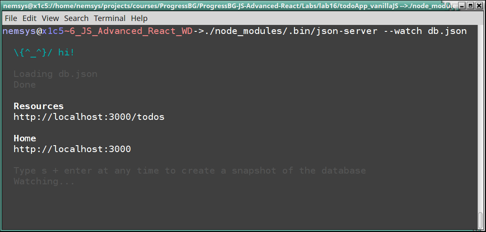
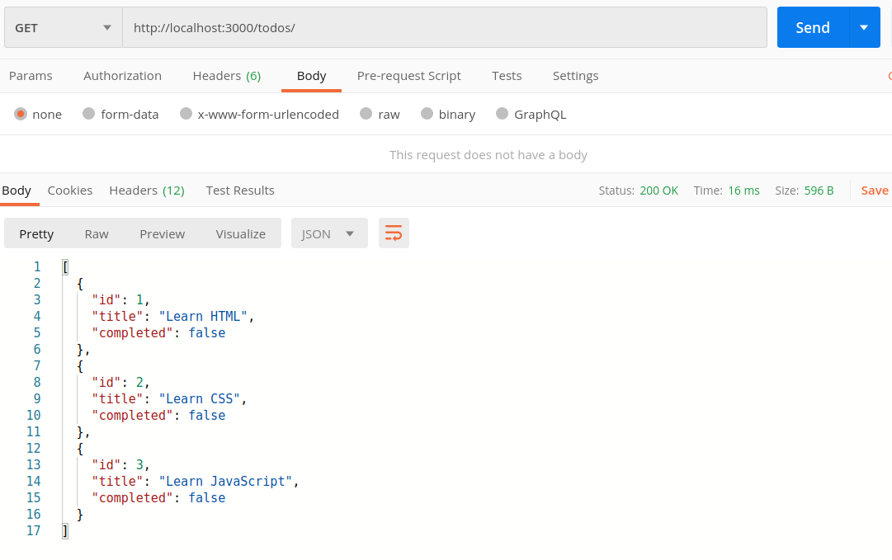
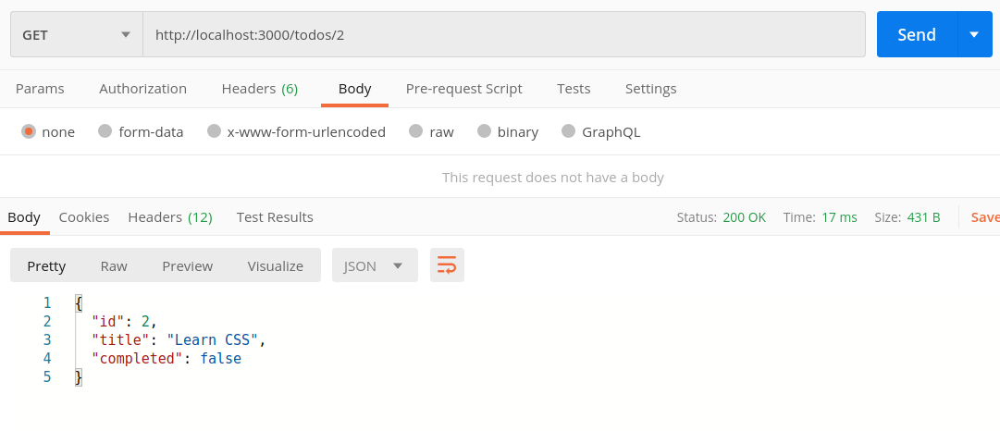
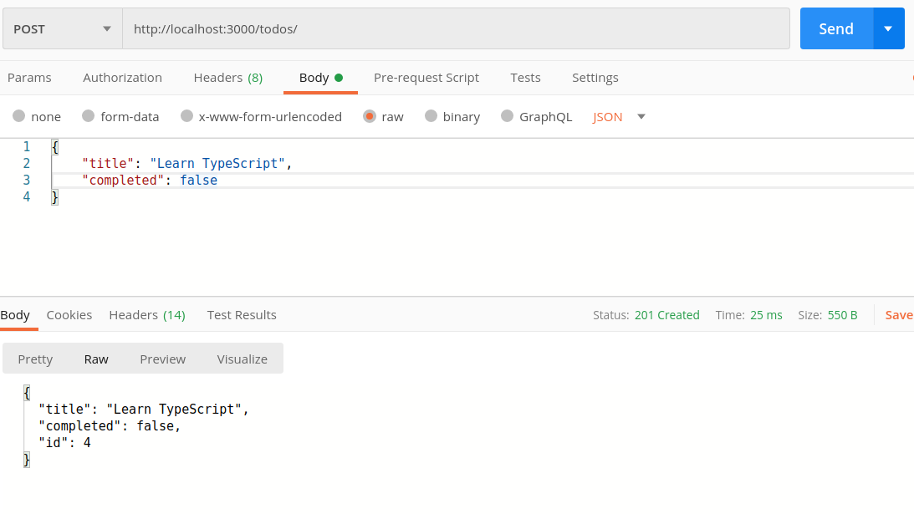
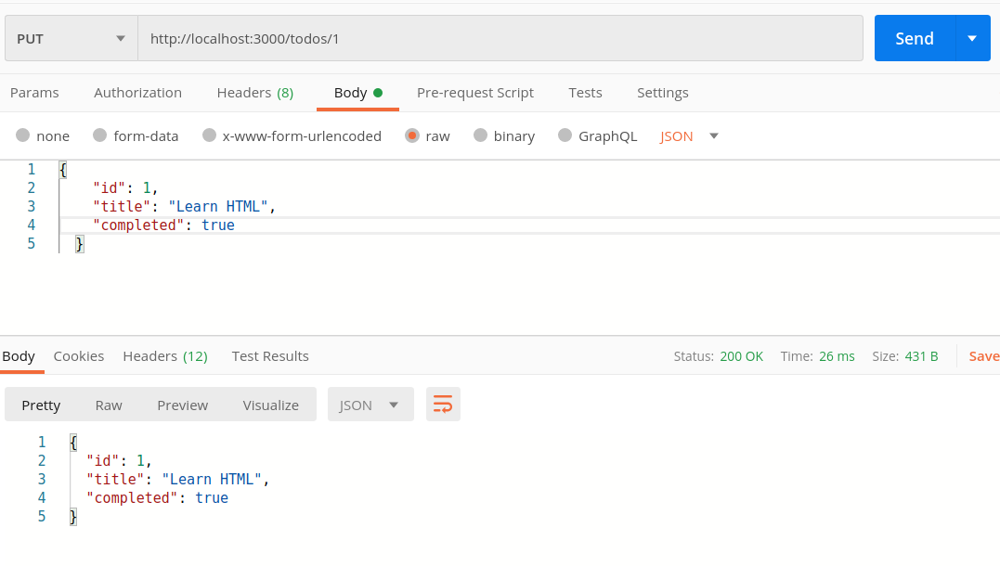
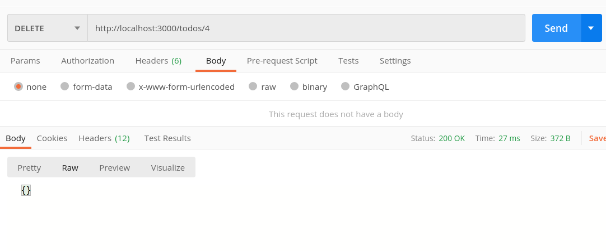

Keyboard shortcuts:
N/СпейсNext Slide
PPrevious Slide
OSlides Overview
ctrl+left clickZoom Element
If you want print version => add '
?print-pdf' at the end of slides URL (remove '#' fragment) and then print.
Like: https://wwwcourses.github.io/...CourseIntro.html?print-pdf
Practical Exercise: Create a TodoApp with REST JSON-Server
Created for
Created by
Practical Exercise: "Create a TodoApp with REST JSON-Server"
Introduction
- In this exercise, we will extend the Create Todo List Application to integrate with a REST API using JSON-Server.
- This version of the TodoApp will allow users to perform CRUD operations (Create, Read, Update, Delete) on tasks, simulating interaction with a backend server.
Setup Project
- Start by setting up the project as described in the previous exercise: "Create Todo List Application - Setup Project" "Create Todo List Application".
- You can create absolutely new project folder structure, but it is better to use a new Git branch.
- This approach allows you to build upon your existing work without altering the original version of TodoApp.
- Create and switch to a new branch (named '
rest-json-server') from your existing project:
git checkout -b rest-json-server
Setup json-server and DB
Setup json-server and DB
Overview
- For our TodoApp demo project, we can use the json-server, as it is freely available on NPM and ready to use.
- Please note, that this server is useful only for learning purposes and you must not use it for any production code.
Configure .gitignore
- The
node_modulesdirectory, which will be created automatically when we install the JSON-server, should be ignored in your Git repository for several important reasons: - Size and Bloat: The
node_modulesdirectory can become very large, as it contains all the dependencies and their sub-dependencies required by your project - Reproducibility: The
package.jsonandpackage-lock.jsonfiles list all required dependencies and their specific versions. Other developers (or you later) can recreate the exact samenode_modulesdirectory by runningnpm install, ensuring that everyone has the same setup without needing to track the actual files. - When you modify your
.gitignorefile commit that change with appropriate message, like Ignore node-modules.
# Node.js dependencies
node_modules/
Installation
- Install json-server
- To prevent polluting your global environment, it's recommended to install NPM packages locally, i.e. without the
-goption. - Also, as we need the package just for dev purposes, then it's recommended to install it as dev dependency
# Navigate to your project root folder
$ cd /path/to/TodoApp
# Set up the npm project
$ npm init
# Install the json-server package locally as a dev dependency
$ npm install json-server --save-dev
Create the DB file
- In project root folder create the file
db.jsonwith next content: - This file serves as a mock database for your project, storing an array of todos objects in
"todos"property. - Any changes made through API requests will reflect directly in this file, allowing you to see data as you would with an actual backend.
- Commit your changes with a message like: Set up JSON server and created db.json
{
"todos":[
{
"id": 1,
"title": "Learn HTML",
"completed": false
},
{
"id": 2,
"title": "Learn CSS",
"completed": false
},
{
"id": 3,
"title": "Learn JavaScript",
"completed": false
}
]
}
Start the server
- All locally installed NPM packages place the executable commands in
./node-modules/.bin/folder. You can start json-server by: - Or you can use npx which executes 'command' either from a local node_modules/.bin, or from a central cache, installing any packages needed in order for 'command' to run.
$ ./node_modules/.bin/json-server --watch db.json
npx json-server --watch db.json
json-server started screenshot
{kind=link}
Do not close (or press CTRL+C) the Terminal, as the server will be killed!
References
- Video Tutorial: Creating demo APIs with json-server
- Official docs: json-server
- Еxamples using Fetch API: Guide @jsonplaceholder.typicode.com
json-server endpoints
json-server endpoints
Overview
- For our TodoApp, we need the server to be capable of serving next requests and taking expected actions:
- The json-server we've setup can serve all of them, even more: Routes in json-server
- A tutorial on how to send these requests to json-server with fetch api can be find on https://jsonplaceholder.typicode.com/guide/
| Method | Path (Route) | Action |
|---|---|---|
| GET | /todos | get all todos |
| GET | /todos/id | get Todo by id |
| POST | /todos | add new Todo |
| PUT | /todos/id | update Todo by id |
| DELETE | /todos/id | remove Todo by id |
json-server usage notes
- Your request body JSON should be object enclosed, just like the GET output. (for example {"name": "Foobar"})
- Id values are not mutable. Any id value in the body of your PUT or PATCH request will be ignored. Only a value set in a POST request will be respected, but only if not already taken.
- A POST, PUT or PATCH request should include a Content-Type: application/json header to use the JSON in the request body. Otherwise it will result in a 200 OK but without changes being made to the data.
Explore the Endpoints
Explore the Endpoints with Postman
- Before starting with coding, it's useful to get insights of the API Server endpoints. I.e. to send HTTP requests to the server and inspect the response. A useful tool for such API exploratory tasks is postman
- If you don't want to install postman, you can use a browser extension to test Restful API Server, like chrome's RestMan extension
- Next slides will present you a screenshot of Postman for each request we need to inspect
GET /todos (get all todos)
{kind=link}
GET /todos/id (get Todo by id)
{kind=link}
POST /todos (add new Todo)
{kind=link}
PUT /todos/id (update Todo by id)
{kind=link}
DELETE /todos/id (remove Todo by id)
{kind=link}
Project implementation
Project implementation
Data Interaction with JSON-Server
- Modify your JavaScript to interact with the JSON-Server API. Replace the local data management logic with API calls to perform CRUD operations.
- Use
fetch(orasync/await) to send requests to the JSON-Server for adding, retrieving, updating, and deleting todos.
Testing and Conclusion
- Test your application by running JSON-Server and interacting with the TodoApp in your browser.
- Ensure that adding, editing, completing, and deleting todos work correctly and that the changes persist between page reloads and are mirrored in db.json file.
- This exercise demonstrates how to integrate a frontend with a simple RESTful API, laying the groundwork for more complex applications.
These slides are based on
customized version of
framework